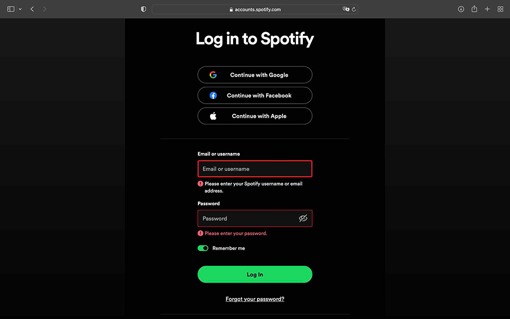

2023-10-24
Visual Thinking and Literacy
Learning Journal #3
In Michael Gonchar's New York Times article 10 Intriguing Photographs to Teach Close Reading and Visual Thinking Skills, the author disects several images and how they may be used to teach students close reading and visual thinking skills.
Techniques for Encouraging Visual Thinking
The techniques that teachers featured in the article provided include looking closely, practicing regularly, asking open-ended questions, noticing details, building on others' observations, adapting questions for all subjects, expanding knowledge of the world, starting conversations, introducing new ideas, and experimenting with other ways to look closely.
My Thoughts
With the rise of digital media and technology, close reading and visual thinking skills are becoming more crucial. Teaching students these skills early on not only encourages them to be mindful of the media they are consuming, but also what the significance behind the media is.
Relevance to Every Picture Project
As designers, it is important that we hone attention to detail and taking the time to interpret images allows us to do so. Our ability to make connections between visual media and the objective of a project ensures that we are holistic designers.
2023-10-18
Best Practices for Modals, Overlays & Dialog Windows
Learning Journal #2
In Naema Baskanderi's Medium article Best Practices for Modals / Overlays / Dialog Windows, the author covers appropriate usage for modals, in addition to the best practices that ensure they are effective.
Use Cases
The use cases for modals are when the objective is to grab the user's attention, recieve user input, and show additional information in context or not in context. It would not be appropriate to use a modal for showing error, success or warning messages; these should appear on the page.
Critical Components
The critical components of every modal include an escape hatch, descriptive title, button, and appropriate sizing/location. Modals should also be user initiated and have an indication that the user cannot interact with the parent page. This can be achieved through the lightbox effect.
Accessibility
In general, modals should not be used on mobile devices because viewing the content is not a pleasant user experience on small screen sizes. To improve the accessibility of modals, implementation of keyboard accessibility and utilizing ARIA are important.
2023-10-15
Best Practices for Form Design
Learning Journal #1
In "Best practices for form design", one of the takeaways that I learned about best practices for form design is similar to that of many UX best practices, which is to make the task at hand as easy for the user as possible. In the case of online forms, this means minimizing the number of input fields and presenting the user with the easiest questions first.
Another crucial part of form design is to always give the user feedback. One way is to inform the user of how many steps the form is comprised of, in addition to clearly marking required fields, and putting password criteria outside of the field. Labels should also go outside of the field so that it is still visible even after the user types something into the field.
Lastly, reducing cognitive load is important in form design. One way to reduce cognitive load is to chunk the form into multiple parts, and stick to a one column design unless there's a special exception. It is also possible to reduce cognitive load further by simplifying redundant text within labels.

Exemplification of Best Practices
A website form that I believe exemplifies best practices is the Spotify account log in form. Not only are the labels concise and placed outside of the fields, but there is also a clear hierarchy with the button having the highest. Additionally, feedback is presented to the user when the inputs do not match the criteria through both color and a warning icon.